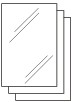
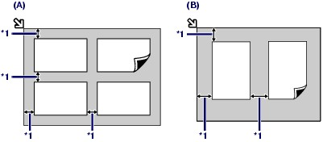
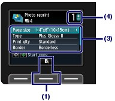

Reprint printed photos.
This section describes the procedure to scan printed photos and print them on 4" x 6" / 10 x 15 cm photo paper.
 Note Note
To save scanned images on the computer, memory card, or USB flash drive, refer to the on-screen manual: Advanced Guide. |
You need to prepare:
Printed photos.
Paper for photo printing. See Media Types You Can Use.

Prepare for reprinting printed photos.
(1) Make sure that the power is turned on.
See Operation Panel.
(2) Press the COPY button.
The copy standby screen will appear.
(3) Load paper.
See Loading Paper in the Rear Tray.
Here we load 4" x 6" / 10 x 15 cm photo paper in the Rear Tray.
(4) Open the Paper Output Tray gently.
(5) Press the left Function button to select Copy menu, then select Photo reprint.
(6) When the guidance screen appears, press the OK button.
Load photos on the Platen Glass to scan.
(1) Open the Document Cover.
(2) Load the photos WITH THE SIDE TO SCAN FACING DOWN on the Platen Glass.
See Loading Originals.

(A) To load four photos on the Platen Glass
(B) To load two photos on the Platen Glass
*1: 0.4 inches / 10 mm
| Note
- Photos that are non-rectangular or irregular shaped (such as cut out photos) - Photos that are entirely white - Photos that have white surrounds
|
(3) Close the Document Cover gently, and press the OK button.
The machine starts scanning. When scanning is completed, the print confirmation screen will appear.
 Important Important
|
Start printing.
(1) Press the center Function button.
The preview screen of the scanned photos will appear on the LCD.
(2) Use the or button to confirm the scanned photos, then press the OK button.
| Note
|
(3) Confirm the page size, media type, print quality, etc.
Here we confirm that 4"x6" (10x15cm) is selected for Page size and the type of loaded photo paper for Type.
To change the settings, use the or button to select the item to change, and use the or button to select an option.
| Note
For details, refer to the on-screen manual: Advanced Guide. |
(4) Use the [+] or [-] button to specify the number of copies.
Confirm the necessary number of paper for printing.

(5) Press the Color button to print in color, or the Black button to print in black & white.
The machine starts printing.
Remove the photos on the Platen Glass after printing is completed.
| Note
Select No to scan and print that slanted photos again.
|